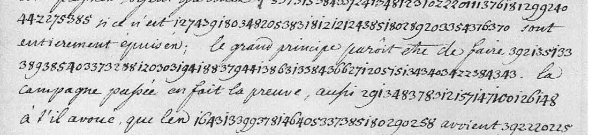

At a glanceCiphertext-only break · complete
- The letters
- Gottfried van Swieten, the Empress’s diplomat at the Elector of Cologne’s court in Bonn, to Count Cobenzl, minister plenipotentiary at Brussels, 14 January and 4 February 1759.
- Where
- Archives générales du Royaume, Brussels, Secrétairerie d’État et de Guerre inv. 1236, ff. 327–328 and 344–345; DECODE R957 and R956, listed as not decrypted.
- The cipher
- Three-digit numbers 100–442 for letters, syllables and a few words, in alphabetical order with occasional second numbers; unseparated runs inside clear French.
- How it was decrypted
- An annealer that keeps the table in alphabetical order, scored by a French language model, broke it on one start in eight; the rest was corrected against the clear text around each run.
- What it says
- The convention that left Prussian Gueldre’s revenues to the French, Moers handed to a prince without asking the Empress, and Soubise’s army living on contributions with only Broglie competent among its generals.
- Still open
- Two name groups in the letter of 4 February, each seen once. The reading audit of 22 October 2026 had set the letter of 14 January back to decoded, not read (two of its four sentences did not build); its contemporary decipherment, found on the DECODE record the next day, settles them.
This page was split on 14 October 2026 from the joint page for van Swieten’s three letters. The undated letter of 1757–58 uses an earlier table, and its decipherment is written under it, a different cipher with its own page: Van Swieten to Cobenzl, 1757–58.
01 The two letters
| Record | Folio, date | Cipher | Decrypted |
|---|---|---|---|
| R957 | ff. 327–328, Bonn, 14 January 1759 | 210 groups in two unbroken runs | all but four groups |
| R956 | ff. 344–345, Bonn, 4 February 1759 | 343 groups in nineteen runs set inside clear sentences | all but about 16 groups |
In 1759 the digits run on with no separators. They divide into threes, which the lengths of the runs confirm. Four DECODE transcriptions had dropped or doubled digits; those runs were transcribed again from the scans.
02 Rebuilding the 1759 table
The 1759 numbers do not fit the 1757 values of the earlier letter, but if the new table was built the same way, it has a strong constraint: a higher number never stands for an alphabetically earlier syllable. The solver (msolve.py) keeps one inventory index per observed number, sorted, and allows at most two numbers per syllable. It anneals the boundaries against a French character model (fr-1750-nospace, added to the shared lang/ registry), with a small bonus per decoded letter. As a control, a 274-group French passage encoded with a random alphabetical table was recovered verbatim. On the real 491 clean groups, one start in eight gave “la nouvelle convention on laisse le revenu… en réservant la souveraineté… l’impératrice”, and the other seven did not.
The key was then corrected by hand, run by run, against the French sentence each run sits in. For example, “avant que les campagnes soient garnies, on ne songe pas à faire des magazins, si ce n’est aux dépens des États de l’Empire qui sont entièrement épuisés”. The end of the table falls into place: x 438/439, y 441, z 442. So do word entries filed in their alphabetical slot: nous, pour, qui, roi, comte.

03 Bonn, 14 January 1759
The fourth DECODE image of R957, never opened before, is a contemporary decipherment of this passage on a separate leaf in another hand; the decipherer wrote 232 above France. Aligned group by group with the figures (23 October 2026), it agrees word for word once seven values of the table rebuilt here are corrected, each at every occurrence: 232 France, 327 oc, 131 ay, 170 cr, 323 o, 440 y, 316 ni; 327 and 440 close two of the table’s order breaks. One group is the encipherer’s slip (357 pr for -on in supposition). The table was rebuilt from the ciphertext before the decipherment was seen; the decipherment now confirms it. The passage (R957_reading.md, English R957_en.md):
… de l’administration; la nouvelle Convention laisse les Revenus à la France en reservant la Souveraineté à l’Imperatrice. On procede toujours de la part des français dans cette Supposition, sans que nous ayons aucun ordre de la Cour a ce sujet; cela cause beaucoups de mesintelligences. On vient de la part de la france de mettre en possession de la principauté de Moeurs le Prince de Croÿ, qui y forme des pretensions, sans prevenir seulement l’Imperatrice, qui en est souveraine.
The September decode had “On promet de toujours”, “la [G…]” and “le prince de Con[…] […] qui vous formez” at these places.
The Prussian lands on the Lower Rhine (Gueldre, Moers) were in French and Austrian hands from 1757. The passage records a convention that left their revenues to one party and the sovereignty to Maria Theresa. It also reports that the French have put the Prince of Croÿ in possession of Moers, which he claimed, without informing her. The corrected values also give two names in the letter of 4 February: Crillon and Dumenil.
04 Bonn, 4 February 1759
Il est constant que l’armée du Prince de Soubise est dans le meilleur état qu’on puisse imaginer … avant que les campagnes soient garnies, on ne songe pas à faire des magazins si ce n’est aux dépens des États de l’Empire qui sont entièrement épuisés; le grand principe paraît être de faire subsister l’armée du roi y sans qu’il en coûte un sou. La campagne passée en fait la preuve, aussi le prince [name] a-t-il avoué que les contributions de la Gueldre avoient suffi à l’entretien de son armée, et qu’on avoit même transmis assez d’argent à l’armée de Contades pour subvenir aux frais du traitement des troupes pendant l’hiver, et que toutes les opérations de l’année passée n’avoient eu d’autre but. Le prince pense bien, mais le reste est malintentionné; outre cela il n’y a pas un officier général entendu à cette armée, excepté le duc de Broglio; le m[aréchal] général des logis de Vaut est intéressé et ignorant, et non l’intendant nécessaire pour mettre en œuvre le système que j’ai détaillé ci-dessus … D’ailleurs, homme non violent, je n’ai pas besoin de parler de Dumesnil; il est universellement connu pour être prussien, […] le prince Camille … Parmi les maréchaux de ce[…] il n’y a que [name] qu’on estime. Comme de notre côté nous ne pouvons pas résister aux plaintes fondées des États, et que les ordres de la cour nous obligent de faire des représentations … on a pris occasion de former des plaintes contre le comte de Pergen comme s’il n’agissoit pas conformément aux intérêts de la cause commune.
05 What remains uncertain
- 232 (twice, R957): France, from the contemporary decipherment (23 October 2026); it had been left open as a name filed under G.
- 147 100 126 148 (R956): the prince who “avowed”. From the context it should be Soubise, but the numbers are out of alphabetical order, so this is probably a name group. Not decrypted (I).
- 170 323 441 (R957) is Croÿ and 170 271 289 337 (R956) Crillon, once 170 = cr and 323 = o were corrected from the decipherment of R957.
- 290 313 316 313 373 (R956): the one marshal “qu’on estime”. The syllables decrypt to la-n-ne-n-r and the name is not identified; the digit division here is uncertain in the scan. Not decrypted (I).
- R957’s awkward “on promet de toujours” is On procede toujours in the decipherment; the pr in supposition is the encipherer’s slip.
- 300 and 294 238 (R956): “le m[aréchal] général des logis de Vaut”. Each number occurs only once, and its value comes from its place in the alphabetical table (I). 300 lies between 299 ma and 303 me, so it is mar… or a word entry such as maréchal rather than m. 294 comes after 293 li and can be lo; 238 comes before 239 g and can be a second g; with 281 is they give logis. The earlier reading here, “le major général des Liégeois”, needed 238 = ge, a ge placed before g (239) and ga (240), and its letters do not spell Liégeois. The maréchal général des logis ran the marches and quarters of a French army. The officer is probably François-Eugène de Vault (1717–1790): a memorandum by “M. de Vault” on the armies in Germany, August 1758, is filed with Soubise’s campaign papers. His post in 1759 has not been verified (I).
Full texts
The transcription and the decryption of every document on this page, so that the reading can be used and checked. Short files are shown here; all are in the repository.
R957, ff. 327-328, Bonn, 14 Jan 1759
Gottfried van Swieten at Bonn to Count Cobenzl at Brussels: the new convention leaves the revenues to France while reserving sovereignty to the Empress; the French act on it without any order from the court, causing much ill feeling; on France's behalf the Prince de Croÿ, who has claims to it, has been put in possession of the principality of Moers without the Empress, its sovereign, being told.
Transcription
290 312 343 429 288 291 150 337 429 312 405 337 290 281 388 292 376 429 313 424 103 290 232 205 376 388 373 428 313 399 290 383 343 429 375 275 193 403 102 287 273 352 375 408 267 194 337 357 327 192 180 398 343 263 343 374 383 180 290 348 120 400 181 231 116 152 281 178 312 383 150 212 403 384 423 355 389 405 357 386 313 384 368 317 424 131 337 385 127 150 422 339 185 193 180 290 164 414 373 103 157 392 263 212 157 290 152 424 193 140 127 164 423 180 304 275 400 202 293 241 313 159 337 430 205 399 180 290 348 120 399 180 290 232 180 303 398 399 376 205 355 384 388 385 389 337 180 290 357 275 162 348 127 403 180 307 213 373 384 291 357 275 157 180 170 323 441 370 440 228 373 303 181 357 212 205 389 337 384 386 313 383 357 193 429 316 373 384 213 291 303 312 399 289 273 352 375 398 378 157 370 205 211 399 385 343 429 375 265 315
Decryption
# R957: van Swieten to Cobenzl, Bonn, 14 January 1759 (ARA Brussels, SEG inv.nr. 1236, ff. 327-328), reading of the cipher passage Re-read 23 Oct 2026 (Claude Opus 5.5, REREAD_BRIEF batch b36); log `R957_reread_log.md`. **The cipher passage rests on its contemporary decipherment**, a separate leaf in another hand filed with the letter (DECODE R957, fourth image, `IMG_R957_I4985_P4`; transcribed in `R957_decipherment.txt`), aligned group by group with the figures (`cipher/R957.txt`, decoded by `dec.py` with the rebuilt 1759 table). The figures and the decipherment agree word for word except at *supposition*, where the figures have a slip (Notes). Excerpt: the cipher passage in full; the letter's clear text (Lamberg, Frankfurt, Soubise, Hamburg, Crefeld, the postscript on the commission at Liège) is on the DECODE images. Conventions: plain = in the decipherment and carried by the figures; spelling as the decipherer wrote it. ## Reading … de l'administration; la nouvelle Convention laisse les Revenus à la France en reservant la Souveraineté à l'Imperatrice. On procede toujours de la part des français dans cette Supposition, sans que nous ayons aucun ordre de la Cour a ce sujet; cela cause beaucoups de mesintelligences. On vient de la part de la france de mettre en possession de la principauté de Moeurs le Prince de Croÿ, qui y forme des pretensions, sans prevenir seulement l'Imperatrice, qui en est souveraine. ## Notes - Figures against the decipherment, group by group: all agree once seven values of the rebuilt table are corrected, each holding at every occurrence (`key.json`, `overrides.json`): 232 *France* (two occurrences; the decipherer wrote *232* above the first *France*), 327 *oc* (pro-*c*-ède; was *om*; puts 327 before 330 *of*), 131 *ay* (ayons; was *av*), 170 *cr* (Croÿ; also R956 *Crillon*), 323 *o* (Cr-o-ÿ; was *nous*; sits after 322 *non* and before 324 *o*), 440 *y* (qui y forme; was *vous*; sits between 439 *x* and 441 *y*), 316 *ni* (preve-*ni*-r; also R956 *Dume-ni-l*; was *ne*). - *Supposition*: the figures give `suppositi` + 357 (*pr*, six other occurrences) + *sans*; the decipherer first wrote *Sa*, struck it, and wrote *supposition sans*. The reading follows the decipherment; the figure is an encipherer's slip. - Look-alike letters: 0 (the reading follows the decipherer's hand, checked against the figures).
Decryption
# R957 (ARA Brussels, SEG inv.nr. 1236, ff. 327-328), van Swieten to Cobenzl, Bonn, 14 Jan 1759: the contemporary # decipherment of the cipher passage, a separate leaf in another hand, DECODE image IMG_R957_I4985_P4 (fourth image of # the record; not opened before 23 Oct 2026). Transcribed 23 Oct 2026 by Claude Opus 5.5 (REREAD_BRIEF b36), line by # line as written; [struck: ...] = struck through by the decipherer; ^232^ = the number written above the word. La nouvelle Convention laisse les Revenus à la ^232^ France en reservant la Souveraineté à L'Imperatrice. on procede toujours De la part des français dans cette Supposition [struck: Sa] sans que nous ayons aucun ordre de la Cour a ce sujet. cela cause beau- coups de mesintelligences, on [struck: vin] vient de la part de la france de mettre en possession de la [struck: princi] principauté de Moeurs Le Prince de Croÿ qui y forme des pretensions sans prevenir seulement L'Imperatrice, qui en est souveraine.
Decryption
# Van Swieten to Cobenzl, 1759: readings Cipher in brackets «…»; clear text of the letter around it in roman. Doubtful words marked (?), unread groups [n]. ## R957, Bonn 14 January 1759 (ff. 327–328) Re-read 23 Oct 2026 (b36) from the contemporary decipherment on the record (DECODE image 4), aligned with the figures: `R957_reading.md` (log `R957_reread_log.md`, decipherment `R957_decipherment.txt`). … de l'administration; «la nouvelle Convention laisse les Revenus à la France en reservant la Souveraineté à l'Imperatrice. On procede toujours de la part des français dans cette Supposition, sans que nous ayons aucun ordre de la Cour a ce sujet; cela cause beaucoups de mesintelligences. On vient de la part de la france de mettre en possession de la principauté de Moeurs le Prince de Croÿ, qui y forme des pretensions, sans prevenir seulement l'Imperatrice, qui en est souveraine.» ## R956, Bonn 4 February 1759 (ff. 344–345) Il est constant que l'armée du Prince de Soubise est dans le meilleur état qu'on puisse imaginer … avant que les campagnes soient garnies, «on ne songe pas à faire des magazins» si ce n'est «aux dépens des États de l'Empire qui» sont entièrement épuisés; le grand principe paroît être de faire «subsister l'armée du roi y sans qu'il en coûte un sou». La campagne passée en fait la preuve, aussi «le prince [147 100 126 148]» a-t-il avoué que les «contributions de la Gueldre» avoient «suffi à l'entretien de son armée» et qu'on avoit même «transmis assez d'argent à l'armée de Contades» pour subvenir aux frais «du traitement des troupes pendant l'hiver», et que toutes les opérations de l'année passée n'avoient «eu d'autre but. Le prince pense» bien, mais le reste est «malintentionné»; outre cela «il n'y a pas un officier général entendu à cette armée, excepté le duc de Broglio; le m[aréchal] (I) général des logis (I) de Vaut est intéressé et ignorant, et non l'intendant nécessaire pour mettre en oeuvre le système» que j'ai détaillé ci-dessus, sans s'oublier quant à ses intérêts propres, auxquels il est fort attaché. D'ailleurs, «homme non violent», je n'ai pas besoin de «parler de Dumenil»; il est universellement connu pour être «prussien, Crillon (170 271 289 337, read 23 Oct 2026 with 170 = cr from R957), le prince Camille (?)» plusieurs bien, mais c'est à quoi se borne tout ce qu'ils peuvent faire de bon pour la cause commune. Parmi «les maréchaux de ce[…]» il n'y a que «[290 313 316 313 373] qu'on estime». Comme de notre côté nous ne pouvons pas résister aux «plaintes fondées des États», et que «les ordres de la cour» nous obligent de faire des représentations … on a pris occasion de former des plaintes contre «le comte de Pergen» comme s'il n'agissoit pas conformément aux intérêts de la cause commune … (I) = inferred from the number's place in the alphabetical table and the sense (corrected 30 Sept 2026; first read "le major (?) général des Liégeois"): 291 300 241 315 375 289 181 294 238 281 180 428 420 399 = le m[aréchal] général des lo-g-is de Vaut. 300 lies between 299 ma and 303 me (mar… or a word entry maréchal rather than m); 294 after 293 li (lo); 238 before 239 g (a second g; "ge" would stand ahead of g and of 240 ga, 241 ge). Each number occurs once. The officer is probably François-Eugène de Vault (1717-1790); his post in 1759 is not verified.
Reading
# R957: van Swieten to Cobenzl, Bonn, 14 January 1759 (ARA Brussels, SEG inv.nr. 1236, ff. 327-328), reading of the cipher passage Re-read 23 Oct 2026 (Claude Opus 5.5, REREAD_BRIEF batch b36); log `R957_reread_log.md`. **The cipher passage rests on its contemporary decipherment**, a separate leaf in another hand filed with the letter (DECODE R957, fourth image, `IMG_R957_I4985_P4`; transcribed in `R957_decipherment.txt`), aligned group by group with the figures (`cipher/R957.txt`, decoded by `dec.py` with the rebuilt 1759 table). The figures and the decipherment agree word for word except at *supposition*, where the figures have a slip (Notes). Excerpt: the cipher passage in full; the letter's clear text (Lamberg, Frankfurt, Soubise, Hamburg, Crefeld, the postscript on the commission at Liège) is on the DECODE images. Conventions: plain = in the decipherment and carried by the figures; spelling as the decipherer wrote it. ## Reading … de l'administration; la nouvelle Convention laisse les Revenus à la France en reservant la Souveraineté à l'Imperatrice. On procede toujours de la part des français dans cette Supposition, sans que nous ayons aucun ordre de la Cour a ce sujet; cela cause beaucoups de mesintelligences. On vient de la part de la france de mettre en possession de la principauté de Moeurs le Prince de Croÿ, qui y forme des pretensions, sans prevenir seulement l'Imperatrice, qui en est souveraine. ## Notes - Figures against the decipherment, group by group: all agree once seven values of the rebuilt table are corrected, each holding at every occurrence (`key.json`, `overrides.json`): 232 *France* (two occurrences; the decipherer wrote *232* above the first *France*), 327 *oc* (pro-*c*-ède; was *om*; puts 327 before 330 *of*), 131 *ay* (ayons; was *av*), 170 *cr* (Croÿ; also R956 *Crillon*), 323 *o* (Cr-o-ÿ; was *nous*; sits after 322 *non* and before 324 *o*), 440 *y* (qui y forme; was *vous*; sits between 439 *x* and 441 *y*), 316 *ni* (preve-*ni*-r; also R956 *Dume-ni-l*; was *ne*). - *Supposition*: the figures give `suppositi` + 357 (*pr*, six other occurrences) + *sans*; the decipherer first wrote *Sa*, struck it, and wrote *supposition sans*. The reading follows the decipherment; the figure is an encipherer's slip. - Look-alike letters: 0 (the reading follows the decipherer's hand, checked against the figures).
Translation
# R957: van Swieten to Cobenzl, Bonn, 14 January 1759, cipher passage, English Translation of `R957_reading.md` (23 Oct 2026, Claude Opus 5.5, batch b36). ## Reading … of the administration; the new convention leaves the revenues to France while reserving the sovereignty to the Empress. The French go on acting on that assumption, although we have no order from the court on the matter; this causes a great deal of ill feeling. On France's behalf the Prince de Croÿ, who has claims to it, has just been put in possession of the principality of Moers, without so much as informing the Empress, who is its sovereign.
R956, ff. 344-345, Bonn, 4 Feb 1759
On Soubise's army: no magazines are being made except at the expense of the exhausted Estates of the Empire, the principle being to keep the King's army without its costing a sou; the contributions of Guelders paid for his army and money was sent to Contades' army for winter quarters.
Transcription
337 315 384 337 241 348 123 102 220 111 376 181 299 240 442 275 385 127 439 180 348 205 283 181 212 124 385 180 289 203 354 376 370 392 135 133 389 385 403 373 288 120 303 194 188 379 441 386 313 384 366 271 205 151 343 403 422 384 343 291 348 378 312 157 147 100 126 148 164 313 399 378 146 405 337 385 180 290 258 392 220 225 102 289 205 408 212 264 205 180 385 337 120 303 193 408 116 385 305 384 123 388 442 177 120 241 313 400 103 288 120 303 194 180 164 313 401 181 188 408 111 406 303 313 400 181 408 343 348 211 349 205 178 313 400 189 259 429 373 214 176 127 399 376 146 399 291 348 375 313 157 348 205 388 298 112 275 403 312 400 277 312 315 271 313 441 101 347 123 422 330 267 265 210 241 315 373 112 205 398 205 188 103 157 399 403 120 303 192 438 157 349 403 291 189 180 194 144 325 239 293 324 291 300 241 315 375 289 181 294 238 281 180 428 420 399 211 400 275 403 376 395 194 212 270 317 375 315 400 322 288 275 399 205 178 313 399 315 160 210 194 367 303 400 399 376 205 325 214 427 376 291 385 441 396 194 303 260 298 303 322 430 335 205 400 348 120 122 289 210 180 187 303 316 288 348 374 424 389 205 170 271 289 337 291 349 378 313 157 152 305 289 281 292 299 376 160 127 439 180 153 290 313 316 313 373 366 337 211 405 303 348 289 111 313 400 403 384 228 313 180 211 181 212 124 385 292 339 176 376 385 180 290 151 343 373 291 166 180 349 210 241 313
Decryption
# Van Swieten to Cobenzl, 1759: readings Cipher in brackets «…»; clear text of the letter around it in roman. Doubtful words marked (?), unread groups [n]. ## R957, Bonn 14 January 1759 (ff. 327–328) Re-read 23 Oct 2026 (b36) from the contemporary decipherment on the record (DECODE image 4), aligned with the figures: `R957_reading.md` (log `R957_reread_log.md`, decipherment `R957_decipherment.txt`). … de l'administration; «la nouvelle Convention laisse les Revenus à la France en reservant la Souveraineté à l'Imperatrice. On procede toujours de la part des français dans cette Supposition, sans que nous ayons aucun ordre de la Cour a ce sujet; cela cause beaucoups de mesintelligences. On vient de la part de la france de mettre en possession de la principauté de Moeurs le Prince de Croÿ, qui y forme des pretensions, sans prevenir seulement l'Imperatrice, qui en est souveraine.» ## R956, Bonn 4 February 1759 (ff. 344–345) Il est constant que l'armée du Prince de Soubise est dans le meilleur état qu'on puisse imaginer … avant que les campagnes soient garnies, «on ne songe pas à faire des magazins» si ce n'est «aux dépens des États de l'Empire qui» sont entièrement épuisés; le grand principe paroît être de faire «subsister l'armée du roi y sans qu'il en coûte un sou». La campagne passée en fait la preuve, aussi «le prince [147 100 126 148]» a-t-il avoué que les «contributions de la Gueldre» avoient «suffi à l'entretien de son armée» et qu'on avoit même «transmis assez d'argent à l'armée de Contades» pour subvenir aux frais «du traitement des troupes pendant l'hiver», et que toutes les opérations de l'année passée n'avoient «eu d'autre but. Le prince pense» bien, mais le reste est «malintentionné»; outre cela «il n'y a pas un officier général entendu à cette armée, excepté le duc de Broglio; le m[aréchal] (I) général des logis (I) de Vaut est intéressé et ignorant, et non l'intendant nécessaire pour mettre en oeuvre le système» que j'ai détaillé ci-dessus, sans s'oublier quant à ses intérêts propres, auxquels il est fort attaché. D'ailleurs, «homme non violent», je n'ai pas besoin de «parler de Dumenil»; il est universellement connu pour être «prussien, Crillon (170 271 289 337, read 23 Oct 2026 with 170 = cr from R957), le prince Camille (?)» plusieurs bien, mais c'est à quoi se borne tout ce qu'ils peuvent faire de bon pour la cause commune. Parmi «les maréchaux de ce[…]» il n'y a que «[290 313 316 313 373] qu'on estime». Comme de notre côté nous ne pouvons pas résister aux «plaintes fondées des États», et que «les ordres de la cour» nous obligent de faire des représentations … on a pris occasion de former des plaintes contre «le comte de Pergen» comme s'il n'agissoit pas conformément aux intérêts de la cause commune … (I) = inferred from the number's place in the alphabetical table and the sense (corrected 30 Sept 2026; first read "le major (?) général des Liégeois"): 291 300 241 315 375 289 181 294 238 281 180 428 420 399 = le m[aréchal] général des lo-g-is de Vaut. 300 lies between 299 ma and 303 me (mar… or a word entry maréchal rather than m); 294 after 293 li (lo); 238 before 239 g (a second g; "ge" would stand ahead of g and of 240 ga, 241 ge). Each number occurs once. The officer is probably François-Eugène de Vault (1717-1790); his post in 1759 is not verified.
Translation
<!-- English translation of the R956 section of READING.md (Claude Opus 5.5, 23 Oct 2026): the cipher runs of R956 (in « ») in full, the clear text around them in extract (… = clear text not transcribed). Same holes: [147 100 126 148] and [290 313 316 313 373] = number groups not read; (I) = inferred, (?) doubtful. An excerpt. --> # R956, Gottfried van Swieten to Count Cobenzl, Bonn, 4 February 1759 (ff. 344-345): English translation It is certain that the Prince de Soubise's army is in the best state imaginable … before the countryside is stocked, «no one is thinking of making magazines» except «at the expense of the Estates of the Empire, which» are entirely exhausted; the great principle seems to be to make «the King's army subsist there without its costing a sou». The past campaign is proof of it; and so «the prince [147 100 126 148]» admitted that the «contributions of Guelders» had «sufficed for the upkeep of his army» and that enough money had even been «sent to Contades's army» to meet the costs «of the troops' pay during the winter», and that all the operations of the past year had «had no other aim. The prince thinks» well, but the rest are «ill-intentioned»; besides that, «there is not one capable general officer in this army except the Duc de Broglie; the m[arshal] (I) general of the quarters (I), de Vaut, is self-interested and ignorant, and not the intendant needed to put into practice the system» that I have detailed above, without forgetting himself as to his own interests, to which he is much attached. Moreover, «a man not violent», I have no need to «speak of Dumenil»; he is universally known to be «Prussian; Crillon, the Prince Camille (?)» several good, but that is the limit of all the good they can do for the common cause. Among «the marshals of th[…]» there is only «[290 313 316 313 373] who is esteemed». As on our side we cannot resist «the well-founded complaints of the Estates», and «the orders of the court» oblige us to make representations … occasion has been taken to make complaints against «the Count of Pergen», as if he were not acting in accordance with the interests of the common cause …
Key: key.json
06 Sources
- Archives générales du Royaume, Brussels, Secrétairerie d’État et de Guerre, inv. 1236; images and transcriptions on DECODE, records R956 and R957 (transcribers SofPe 2019, XL 2020).
- No printed edition or earlier decipherment of these letters was found.
- Service historique de la Défense, Vincennes, file “Juillet 1757–novembre 1758 : instruction du roi au prince de Soubise pour la direction de la campagne…” (catalogue description), which lists a “mémoire de M. de Vault sur la situation des armées en Allemagne en août 1758”.
Transcriptions, solver, key and readings: targets/swieten1759/ in the repository.
Cite this page
Daniel Bourdeau, “Gottfried van Swieten to Count Cobenzl, 1759”, Cyphersolver, posted 15 October 2026, updated 23 October 2026, https://cyphersolver.com/swieten1759.html.